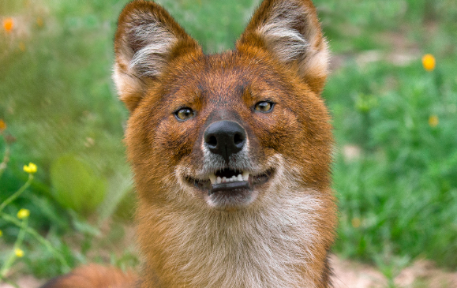
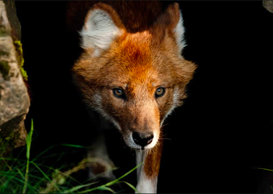
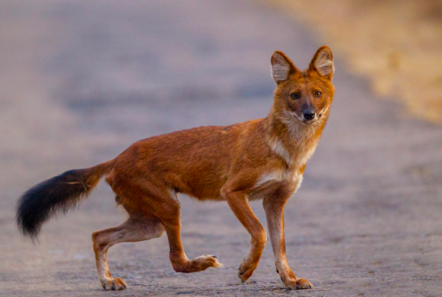
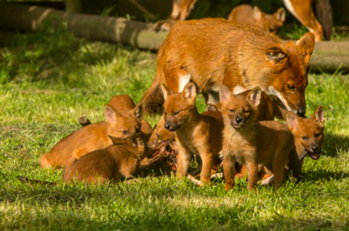
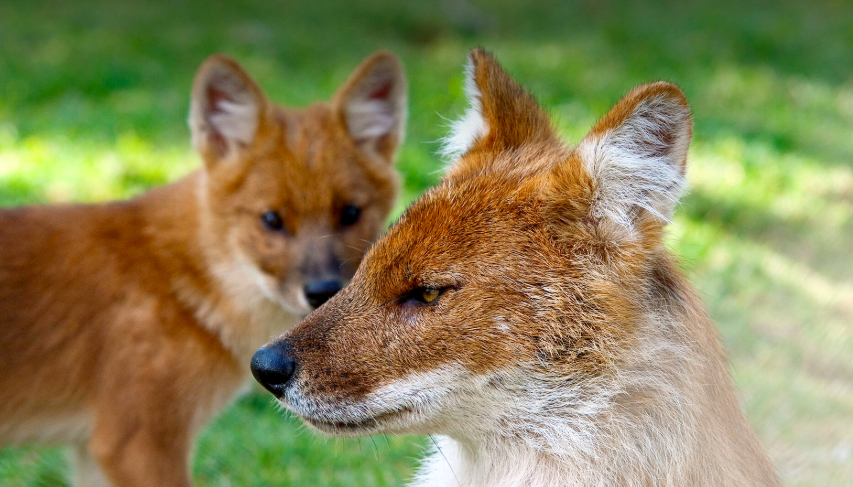
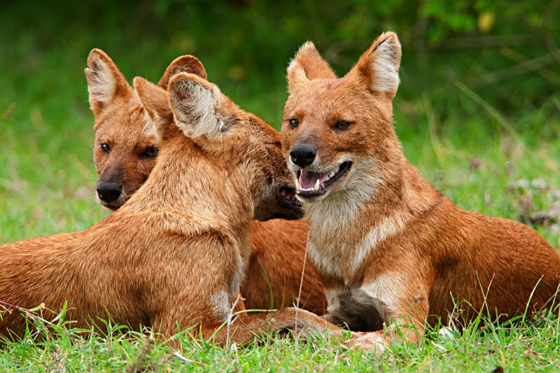

Basic Information
The dhole(Cuon alpinus) is a canid native to Central, South and Southeast Asia. Other English names for the species include Asiatic wild dog, Indian wild dog, whistling dog, red dog, and mountain wolf. Found in eastern and southern Asia, from Siberia in the north to the Malay Peninsula in the south, dholes occupy a wide variety of climates and habitats, including dense forests, scrub, steppes, and alpine regions. They vary in color from charcoal gray to rust red to sandy beige, depending on their habitat. Their tail is brushy and fox-like, often with a black tip. These wild dogs usually have a white belly, chest, and feet, but not always.
  Social animal
Living in large clans without rigid dominance hierarchies and containing multiple breeding females. Such clans usually consist of 12 individuals, but groups of over 40 are known. It is a diurnal pack hunter which preferentially targets medium and large sized ungulates. In tropical forests, the dhole competes with tigers and leopards, targeting somewhat different prey species, but still with substantial dietary overlap.
 History
The species was first described in European literature in 1794 by an explorer named Pesteref, who encountered dholes during his travels in far eastern Russia. He described the animal as being a regular pack hunter of Alpine ibex, and of bearing many similarities with the golden jackal.
Why endangered?
Main threats to the species include ongoing habitat loss, depletion of prey base, persecution and possibly disease transfer from domestic and feral dogs. The main prey for the dhole are ungulates, which have also suffered high depletion of their population across the dhole's range.
How to save Dhole?
Though it's been illegal to kill a dhole since the early 1970s, people are still doing it out of fear that the wild dogs are threatening livestock. There has been some pressure on the Indian government to make penalties stiffer for said acts. The World Wildlife Fund has taken the approach that locals will care about saving the dhole only if they see economic benefits, so the WWF is assisting in the development of an ecotourism venture in Cambodia’s Srepok River Area.